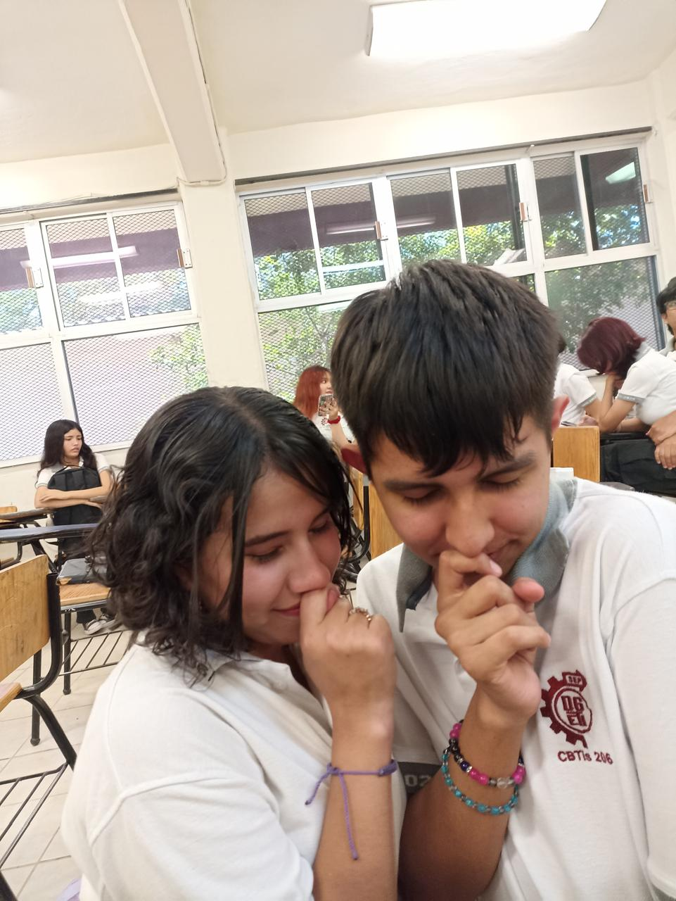

Desarolladores
Somos Derek Jose Juan Luna Mercado y Airam Azeret Velázquez Morales de la escuela CBTIS 206, Estudiantes de Programacion en el 5to semestre, nos gusta la comida y las cosas lindas entonces pensamos "por que no juntar ambas?" ;b
Somos Derek Jose Juan Luna Mercado y Airam Azeret Velázquez Morales de la escuela CBTIS 206, Estudiantes de Programacion en el 5to semestre, nos gusta la comida y las cosas lindas entonces pensamos "por que no juntar ambas?" ;b